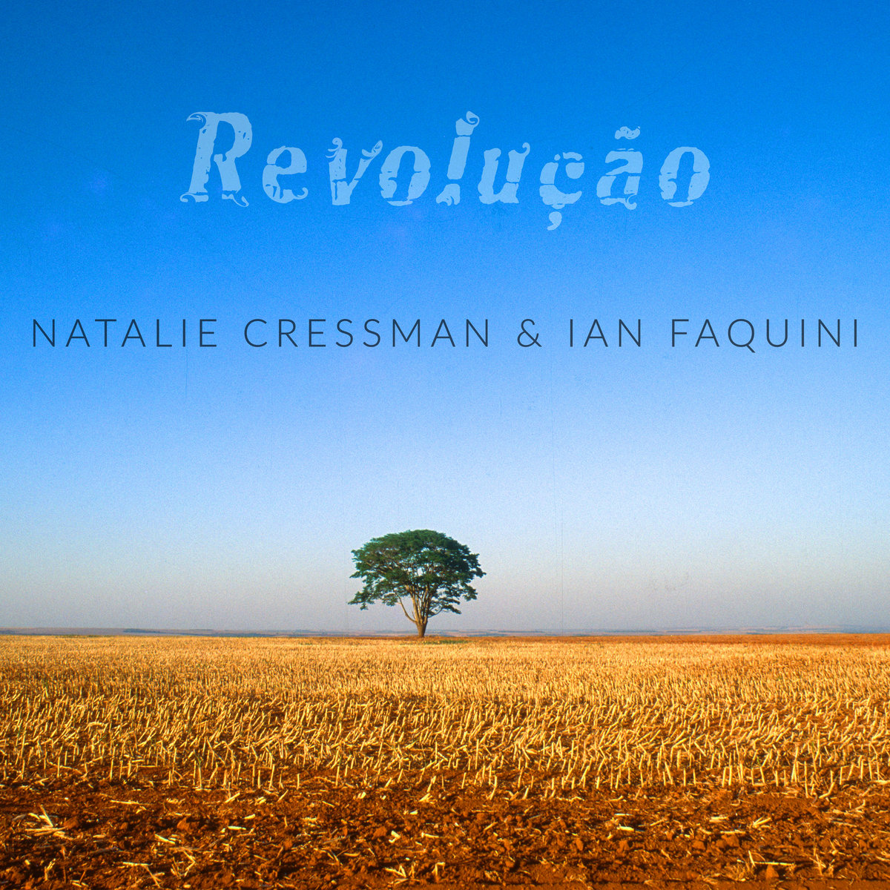

Revolução (2025)
Natalie Cressman & Ian Faquini
00:18
You asked for one hundred thousand réis
Você me pediu cem mil réis,
00:21
To buy a soirée
Pra comprar um soirée
00:23
And a drum
E um tamborim,
00:27
Organdy has been going for cheap lately
O organdi anda barato pra cachorro,
00:31
And a cat up on the hill
E um gato lá no morro,
00:33
Doesn't cost that much at all
Não é tão caro assim.
(repeat once)
(repetir uma vez)
00:52
It doesn't cost a thing
Não custa nada
00:54
To comply with formalities
Preencher formalidade
00:57
A drum for the batucada
Tamborim pra batucada
00:59
Soirée for society
Soirée pra sociedade
01:02
I'm very reasonable
Sou bem sensato
01:04
I've answered your requests
Seu pedido atendi
01:06
I already have the cat skin
Já tenho a pele do gato,
01:08
We just need a meter of Organdy
Falta o metro de organdi.
01:13
You asked for one hundred thousand réis
Você me pediu cem mil réis,
01:15
To buy a soirée
Pra comprar um soirée
01:17
And a drum
E um tamborim,
01:20
Organdy has been going for cheap lately
O organdi anda barato pra cachorro,
01:24
And a cat up on the hill
E um gato lá no morro,
01:26
Doesn't cost that much at all
Não é tão caro assim.
01:28
I know that you
Eu sei que você
01:30
Can make a drum in a day
Num dia faz um tamborim
01:32
But no one makes a soirée
Mas ninguém faz um soirée
01:34
Out of half a meter of satin
Com meio metro de cetim
01:37
In a soirée
De soirée
01:38
You'll stand out at a dance
Você num baile se destaca,
01:41
But I don't want you anymore
Mas não quero mais você,
01:42
Because I don't know how to wear a suit
Porque não sei vestir casaca.
01:44
You (you...)
Você (você...)
(instrumental)
02:36
I know that you
Eu sei que você
02:37
Can make a drum in a day
Num dia faz um tamborim
02:40
But no one makes a soirée
Mas ninguém faz um soirée
02:41
Out of half a meter of satin
Com meio metro de cetim
02:45
In a soirée
De soirée
02:46
You'll stand out at a dance
Você num baile se destaca,
02:48
But I don't want you anymore
Mas não quero mais você,
02:50
Because I don't know how to wear a suit
Porque não sei vestir casaca.
02:52
You (you...)
Você (você...)
02:54
You asked for one hundred thousand réis
Você me pediu cem mil réis,
02:56
To buy a soirée
Pra comprar um soirée
02:58
And a drum
E um tamborim,
03:02
Organdy has been going for cheap lately
O organdi anda barato pra cachorro,
03:06
And a cat up on the hill
E um gato lá no morro,
03:08
Doesn't cost that much at all
Não é tão caro assim.
00:07
It's a game of ciranda
É brincadeira de ciranda
00:09
That never stops charming us
Que não para de encantar
00:11
Spinning in the air
Girar no ar
00:14
Carries the song of the cicada
Carrega o canto da cigarra
00:16
In a maddening love
Num amor de aluar
00:18
If there's moonlight
Se há luar
00:20
And makes a sound that now I have to tell you
E faz um som que agora eu tenho que contar
00:23
That the lady shall want
Que a moça há de querer
00:25
That the night shall deliver
Que a noite há de entregar
00:27
The contradance in the star that is you
A contradança na estrela que é você
00:29
Your crucial points
Seus pontos cruciais
00:31
Planets and whatnot
Planetas e que tais
00:33
And darkness goes and comes the light
E vai o breu e vem a luz
00:35
In a sneaky given minute
Dado minuto sorrateiro
00:38
Only a prelude
Prelúdio só
00:40
When it broke the meridian
Quando rompeu meridiano
00:42
The median movement
O movimento mediano
00:44
Shines the sun
Refulge o sol
00:47
Dancers know that those that take you out to dance
Sabe quem dança que quem tira pra dançar
00:49
Orbit with you
Orbita com você
00:51
And turn into your place
E vira o seu lugar
00:53
That all life has its time to come
Que toda vida tem seu tempo de chegar
00:56
That is born and that will die
Que nasce e vai morrer
00:57
In the cardinal directions
Nos pontos cardeais
00:59
To turn to morning, to turn to evening
Amanhecer, entardecer,
01:01
To turn to night, to live
Anoitecer, viver
01:06
To turn to morning, to turn to evening
Amanhecer, entardecer,
01:08
To turn to night, to live
Anoitecer, viver
01:12
Swift gira
Gira ligeira
01:14
Gira of hope
Gira de esperança
01:15
Passing gira
Gira passageira
01:17
Gira for the dance
Gira pela dança
01:19
In which the universe is your host without a dance partner
Que o universo é seu anfitrião sem par
01:25
Swift gira
Gira ligeira
01:27
Gira of hope
Gira de esperança
01:28
Passing gira
Gira passageira
01:30
Gira for the dance
Gira pela dança
01:32
In which the universe is your host without a dance partner
Que o universo é seu anfitrião sem par
(instrumental)
02:31
To turn to morning, to turn to evening
Amanhecer, entardecer,
02:33
To turn to night, to live
Anoitecer, viver
02:37
To turn to morning, to turn to evening
Amanhecer, entardecer,
02:39
To turn to night, to live
Anoitecer, viver
02:44
Swift gira
Gira ligeira
02:46
Gira of hope
Gira de esperança
02:47
Passing gira
Gira passageira
02:49
Gira for the dance
Gira pela dança
02:51
In which the universe is your host without a dance partner
Que o universo é seu anfitrião sem par
02:58
Swift gira
Gira ligeira
02:59
Gira of hope
Gira de esperança
03:00
Passing gira
Gira passageira
03:02
Gira for the dance
Gira pela dança
03:04
In which the universe is your host without a dance partner
Que o universo é seu anfitrião sem par
03:11
It's a game of ciranda
É brincadeira de ciranda
03:12
That never stops charming us
Que não para de encantar
03:15
Spinning in the air...
Girar no ar...
(repeats until end)
(repete até o final)
00:13
Bring me a cup of water
Traga-me um copo d'água
00:16
I'm thirsty
Tenho sede
00:19
And this thirst
E essa sede
00:21
May kill me
Pode me matar
00:30
My throat
Minha garganta
00:32
Asks for a little bit of water
Pede um pouco d'água
00:36
And my eyes
E os meus olhos
00:38
Ask for your gaze
Pedem seu olhar
00:48
Plants ask for rain
A planta pede chuva
00:52
When they want to bloom
Quando quer brotar
01:00
The sky soon grows dark
O céu logo escurece
01:04
When it's time for rain
Quando vai chover
01:12
My heart
Meu coração
01:14
Asks only for your love
Só pede o seu amor
01:18
If you don't give it to me
Se não me deres
01:21
I might even die
Posso até morrer
(instrumental)
(whole thing repeats)
(música inteira repete)
T/L Note: This song uses a lot of uncommon and/or outdated regionalisms, which I couldn't quite get across on the translation.
00:00
I'm limping but don't fall out of stubbornness
Tô capengando mas não caio de pirraça
00:02
I'm limping but don't fall out of love
Tô capengando mas não caio por amor
00:04
Shaky like a calf on the botocuda canoe
Bambo que nem garrote no bote da botocuda
00:07
In need of money
Precisando de dinheiro
00:09
Like a peddler I keep on fighting even still
Bufarinheiro eu tô na luta mesmo assim
00:11
I keep on working for my share just to end up in a coffin
Vou cavucando meu quinhão pra terminar no gurufim
00:14
I'm limping but don't fall out of stubbornness
Tô capengando mas não caio de pirraça
00:16
I'm limping but don't fall out of love
Tô capengando mas não caio por amor
00:18
Crooked like a pau d'água resting on the barriguda
Torto que nem pau d'água escorado na barriguda
00:20
Leading the chicken coop
Comandando o galinheiro
00:22
Sugarcane farmer, pothead, cherub
Canavieiro, maconheiro, querubim
00:24
I'm not cattle but I'm full of this plate of grass
Eu não sou gado mas tô cheio desse prato de capim
00:27
If I take a step, I take it back right after
Se dou um passo desfaço logo em seguida
00:29
The beat of life has tripped me up, ô ioiô
Da minha vida o compasso me tropeçou, ô ioiô
00:33
Dancing my way down the river
Tanga balanga na charanga pelo rio
00:35
Like a gypsy I want to go without the need for arriving
Como um cigano eu quero ir sem compromisso de chegar
00:37
I'm limping, firm like a nail in sand
Tô capengando, firme igual prego na areia
00:39
Only the blood in my veins still tries to find its way around
É só o sangue pela veia que inda teima em navegar
00:43
Renga pendenga minha quenga, my Brazil
Renga pendenga minha quenga, meu Brasil
00:44
Like a gypsy I want to go against the spell that got me
Como um cigano eu quero ir contra o feitiço que pegou
00:47
I'm limping, ugly like a thin dog
Tô capengando, feio igual cachorro magro
00:48
But I can only get my revenge for this last year
Mas me vingo desse estrago só no ano que passou
00:52
I'll go, I won't, I'll go, I won't
Eu vou, não vou, eu vou, não vou
(whole thing repeats)
(música inteira repete)
(instrumental)
00:00
Wasn't it Maria that always said
Não era Maria quem sempre dizia
00:08
That day came from the palm of a hand?
Que o dia surgia da palma da mão?
00:14
From the color of the tanager
Da cor da Saíra
00:18
From the stones on the ground
Da pedra do chão
00:21
From the silver of Yemọja
Da prata de Iemanjá
00:27
Or was it Maria saying that no
Ou era Maria dizendo que não
00:34
That there isn't pain without medicine
Nem dor sem remédio
00:38
Evil without forgiveness
Nem mal sem perdão
00:40
Or moon without verse in the skies of Bahia
Nem Lua sem verso no céu da Bahia
00:47
Mirror of the water
Espelho das águas
00:53
A guiding star
Uma estrela-guia
00:57
I could swear there was one in the darkness of night
Jurava que havia de noite no breu
01:07
Holding a vigil so that the Holy Mary
Fazendo vigília que a Ave Maria
01:13
Could fly over my dreams
Avoasse sobre os sonhos meus
01:20
She would come, I knew
Viria, sabia
01:24
Take the agony in the beauty of this moment
Levar a agonia na beleza dessa hora
01:33
Where poetry would open its chest
Em que a poesia seu peito abriria
01:41
On the ocean waves
Nas ondas do mar
(instrumental)
02:43
A guiding star
Uma estrela-guia
02:47
I could swear there was one in the darkness of night
Jurava que havia de noite no breu
02:56
Holding a vigil so that the Holy Mary
Fazendo vigília que a Ave Maria
03:02
Could fly over my dreams
Avoasse sobre os sonhos meus
03:09
She would come, I knew
Viria, sabia
03:12
Take the agony in the beauty of this moment
Levar a agonia na beleza dessa hora
03:21
Where poetry would open its chest
Em que a poesia seu peito abriria
03:29
On the ocean waves
Nas ondas do mar
03:40
So its poet could rest
Pro seu poeta descansar
(instrumental)
A "Moda de Viola" is a traditional Brazilian style of music, sung by two people with 10-string guitar ("Viola Caipira") accompaniment.
00:00
My swallow, my seagull
Minha andorinha, minha gaviota
00:07
My love, don't cry
Meu amor não chora
00:09
Soon I'm coming back
Que já já eu vou voltar
(twice)
(duas vezes)
00:26
I was a pioneer
Fui o pioneiro
00:29
A master without school
Mestre sem escola
00:32
In being a violeiro
A ser violeiro
00:34
The first one with a bag
O primeiro de sacola
00:38
To put on the saddle
De montar arreio
00:41
To spur the horse
De cravar espora
00:44
On around the world
Mundo volta e meia
00:46
Longing in my head
E a saudade na cachola
00:50
My swallow, my seagull
Minha andorinha, minha gaviota
00:57
My love, don't cry
Meu amor não chora
00:59
Soon I'm coming back
Que já já eu vou voltar
(twice)
(duas vezes)
01:15
Fast and low
Rápido rasteiro
01:19
Life that takes a while
Vida que demora
01:21
I'm a messenger
Sou um mensageiro
01:24
An Angolan clerk
Um caixeiro de Angola
01:28
If I rhyme quick
Se eu rimar ligeiro
01:31
A thin thread of rope
Fiapo de corda
01:34
Daggers rain
Chove canivete
01:36
And snakes unfurl
E a serpente desenrola
01:40
But I went to step down on your gaze
Mas fui apear no seu olhar
01:46
On this blue that could calm the seas
Nesse azul de enternecer o mar
01:53
Seven stars lit up, sunflowers spun
Sete estrelas acenderam, girassol girou
01:59
Look who came back
Olha quem voltou
02:02
My swallow, my seagull
Minha andorinha, minha gaviota
02:08
My love, don't cry
Meu amor não chora
02:11
Soon I'm coming back
Que já já eu vou voltar
(twice)
(duas vezes)
(instrumental)
02:52
But I went to step down on your gaze
Mas fui apear no seu olhar
02:58
On this blue that could calm the seas
Nesse azul de enternecer o mar
03:04
Seven stars lit up, sunflowers spun
Sete estrelas acenderam, girassol girou
03:11
Look who came back
Olha quem voltou
03:13
My swallow, my seagull
Minha andorinha, minha gaviota
03:20
My love, don't cry
Meu amor não chora
03:22
Soon I'm coming back
Que já já eu vou voltar
(twice)
(duas vezes)
(instrumental)
00:11
Dreamed of the breeze
Sonhava a viração
00:14
Turned into a sailor
Virava marinheiro
00:17
Of the soft tide
Da maré macia
00:20
Wind as his helmsman
Vento timoneiro
00:24
Invented dunes with his body aflame
Inventava dunas com o corpo em brasa
00:33
The sun was uncovered
Desencobria o sol
00:36
A washerwoman appeared
Surgia lavadeira
00:39
Of metal, basin
Do metal, bacia
00:42
Gold in the sieve
Ouro na peneira
00:45
A crystal in the eyes of Our Lady
Um cristal nos olhos de Nossa Senhora
00:55
And fought to be
E se danava a ser
00:58
Even if he died, he wouldn't die
Podia até morrer, que não morria
01:05
If a single grain was moved
Se se movia um grão
01:08
Revolution smiled at him
Era a revolução que lhe sorria
01:16
Every now and again then
De vez em quando então
01:19
It rained in the badlands because it felt
Chovia no sertão porque sentia
01:27
As if poetry was the flour
Que a poesia era a farinha
01:34
The bread, word and prayer
O pão, palavra e oração
(instrumental)
(whole thing repeats)
(música inteira repete)
00:00
Não falamos o seu nome
We don’t speak its name
00:06
Mas reprimido na minha mente ainda ecoa
But shuttered in my mind it echoes all the same
00:14
Tropeço calada, mas acho que devia saber
I stumble silent, still I think that you should know
00:21
O quanto importa você ainda estar aqui, respirando
Just what it means that you’re still here, breathing
00:34
De certos modos é igual
Some ways it’s the same
00:38
Palavras fluindo como o doce mel no nosso joguinho
Words flowing honey sweet inside our little game
00:46
De fininho e se escondendo do mundo em que você se foi
Tip-toed and hiding from a world where you are gone
00:53
Com sorrisos reforçados persistimos
With armored smiles we carry on
01:04
Mas não pode esconder de mim os ossos quando abraçamos
But you can’t hide from me the bones when we embrace
01:12
E estes revelam as mudanças a acontecer
And they betray the changes taking place
01:19
Sua órbita se alarga agora, o poço de notícias seca
Your orbit widens now, the well of news runs dry
01:27
Eu me preparo pra dizer adeus
I brace myself to say goodbye
01:34
Enquanto é enterrado
As you’re laid to rest
01:39
Um milhão de notas pra você dançam, cativas, no meu peito
A million notes to you flit captive in my chest
01:46
Sou deixada só com elas, incerta ao que fazer
I’m left alone with them, unsure of what to do
01:53
Nem mesmo certa se elas vão chegar à ti
Not even sure if they can ever reach you
02:04
Agora um ano se passou
Now a year’s gone by
02:08
Não tenho as palavras perfeitas mas vou tentar
I don’t quite have the words perfected but I’ll try
02:15
Minha voz ainda engasga quando tento lhe homenagear
My voice still catches when I try to eulogize
02:22
É como tentar medir os céus
It feels like measuring the skies
02:32
E o tempo é uma tempestade de areia a me despedaçar
And time’s a blizzard of sand tearing me apart
02:39
Tenta me cegar, meu coração penetrar
It tries to blind, to penetrate my heart
02:47
Essa vigília é infindável, mas vou tentar argumentar
This vigil’s endless, but I’ll try to make my case
02:54
Enquanto ainda consigo imaginar seu rosto
While I can still picture your face
00:10
Rowing down my sorrows on the stream
Remando as mágoas no igarapé
00:15
Go canoe
Canoa vai
00:22
Undo the fog with your faith
Desfaz as névoas com a sua fé
00:26
Kissing the rivers
Beijando os rios
00:31
It was Aatu, the shaman's prayer
Foi Aatu, oração do pajé
00:36
That blessed me
Que me benzeu
00:40
In the visions of tupis and barés
Nas mirações de tupis e barés
00:45
I am the sea
O mar sou eu
00:49
You can hear the past of the shores
Ouve o passado das margens daqui
00:53
Of the Nhamundá
do Nhamundá
00:59
From the sorrow of the goddess Iaci
Nasceu do pranto da deusa Iaci
01:03
Its mystery was born
O teu mistério
01:08
Drips from the belly the sap of a flower
Corre do ventre a seiva de uma flor
01:12
That no longer exists
Que já não há
01:17
From the village comes a love song
Surge da aldeia um canto de amor
01:21
To save us all
Pra nos salvar
01:25
Xcunderê, xcunderê, xcunderêiê
Xcunderê, xcunderê, xcunderêiê
01:29
Xcunderê, xcunderê, xcunderêiê
xcunderê, xcunderê, xcundereiê
01:33
Forget you in the edge of secrets
Te esquecer na beira dos segredos
01:36
When night awakens
Quando a noite desperta
01:42
Hide you deep inside my chest
Te esconder no fundo do meu peito
01:45
In this rain that intensifies
Com essa chuva que aperta
01:52
Pretty young girls with muiraquitãs
Belas cunhãs com muiraquitãs
01:57
Searching
A procurar
02:03
For verses that sprout in the mornings
Versos que brotam pelas manhãs
02:08
Of this morena
Dessa morena
02:12
It's so beautiful this fear of yours
É tão bonito esse medo em você
02:17
Of giving yourself out
De se entregar
02:21
But there's nothing for us to fear
Mas não há nada pra gente temer
02:26
Or wait for
Nem pra esperar
02:29
Xcunderê, xcunderê, xcunderêiê
Xcunderê, xcunderê, xcunderêiê
02:33
Xcunderê, xcunderê, xcunderêiê
xcunderê, xcunderê, xcundereiê
02:38
Forget you in the edge of secrets
Te esquecer na beira dos segredos
02:40
When night awakens
Quando a noite desperta
02:46
Hide you deep inside my chest
Te esconder no fundo do meu peito
02:49
In this rain that intensifies
Com essa chuva que aperta
02:56
Came morning, and your gaze
Amanheceu, e o seu olhar
03:05
Spilled me into the river-sea
Me derramou no rio-mar
03:14
Came morning, and your gaze
Amanheceu, e o seu olhar
03:22
Spilled me into the river-sea
Me derramou no rio-mar
03:30
Xcunderê, xcunderê, xcunderêiê
Xcunderê, xcunderê, xcunderêiê
03:34
Xcunderê, xcunderê, xcunderêiê
xcunderê, xcunderê, xcundereiê
03:39
Xcunderê, xcunderê, xcunderêiê
Xcunderê, xcunderê, xcunderêiê
03:43
Xcunderê, xcunderê, xcunderêiê
xcunderê, xcunderê, xcundereiê
[1] The Rooster and the Eagle
Two roosters were fighting for the right of leading the chicken coop in a farm. Finally, one of the roosters emerged victorious.
The defeated rooster retreated to a more peaceful corner of the farm. The winner jumped up to the top of a wall and, flapping its wings, sung with pride.
An eagle that was flying by saw the celebration and, with a sharp dive, snatched the rooster away in its claws.
The defeated rooster then left his corner and, from then on, reigned over the chicken coop uncontested.